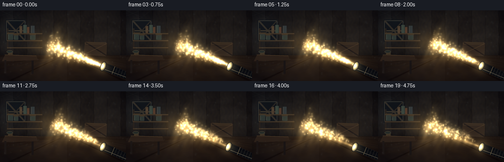
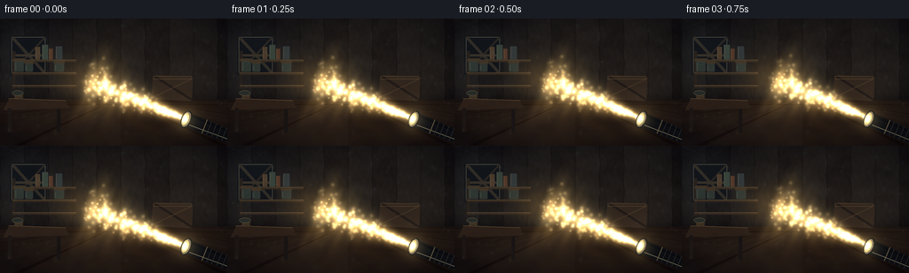
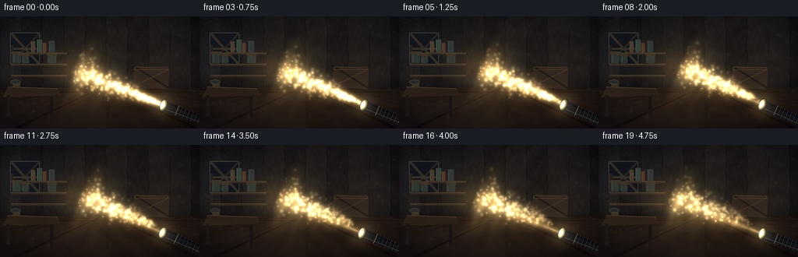
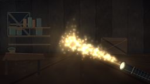
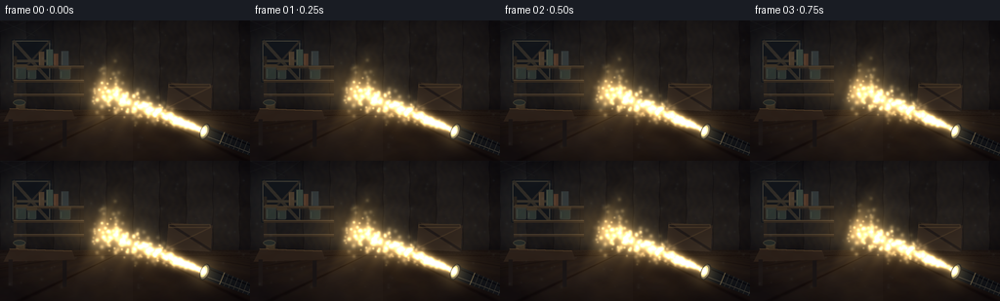
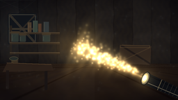

CODING AGENTS AS PIXEL WORLD MODELS
traex/DeepSeek-V4.1-Flash · phygen_052
点击播放 · 原生 RGB 像素
逐轮保存的候选
回放视频、检查图与代码变化。
每份候选均可单独播放。实际图片检查记录在下方工具轨迹中。
候选 01播放与检查图
点击播放 · 原生 RGB 像素

展开代码变化
--- 上一保存版本
+++ 本次保存版本
@@ -0,0 +1,469 @@
+"""Procedural render of a flashlight beam crossing a dusty room."""
+
+from pathlib import Path
+
+import numpy as np
+from PIL import Image, ImageDraw, ImageFilter
+from scipy.ndimage import gaussian_filter
+
+import artifact_io
+
+
+WIDTH = 256
+HEIGHT = 144
+FRAME_COUNT = 20
+FPS = 4
+SS = 3
+WW = WIDTH * SS
+HH = HEIGHT * SS
+RNG = np.random.default_rng(52026)
+
+
+def smoothstep(a, b, x):
+ t = np.clip((x - a) / (b - a), 0.0, 1.0)
+ return t * t * (3.0 - 2.0 * t)
+
+
+def resize_float(field, shape, resample=Image.Resampling.BICUBIC):
+ image = Image.fromarray(field.astype(np.float32), mode="F")
+ return np.asarray(image.resize((shape[1], shape[0]), resample), dtype=np.float32)
+
+
+def blurred(field, radius):
+ return gaussian_filter(field.astype(np.float32), sigma=radius, mode="nearest")
+
+
+def fbm(shape, rng, octaves=5, base=4, stretch_x=1.0):
+ h, w = shape
+ result = np.zeros(shape, np.float32)
+ total = 0.0
+ amplitude = 1.0
+ for octave in range(octaves):
+ gh = max(2, int(base * (2**octave)))
+ gw = max(2, int(base * stretch_x * (2**octave)))
+ coarse = rng.random((gh, gw), dtype=np.float32)
+ field = resize_float(coarse, shape)
+ result += amplitude * field
+ total += amplitude
+ amplitude *= 0.53
+ result /= total
+ result -= result.min()
+ result /= max(result.max(), 1e-6)
+ return result
+
+
+def polygon(draw, points, fill):
+ draw.polygon([(int(round(x)), int(round(y))) for x, y in points], fill=fill)
+
+
+def line(draw, points, fill, width=1):
+ draw.line([(int(round(x)), int(round(y))) for x, y in points], fill=fill, width=width)
+
+
+def make_background():
+ yy, xx = np.mgrid[0:HH, 0:WW].astype(np.float32)
+ xn = xx / WW
+ yn = yy / HH
+ horizon = 0.635
+
+ broad = fbm((HH, WW), RNG, octaves=6, base=3)
+ fine = fbm((HH, WW), RNG, octaves=5, base=8)
+ grain = fbm((HH, WW), RNG, octaves=4, base=18)
+ wall_mask = (yn < horizon).astype(np.float32)
+ floor_mask = 1.0 - wall_mask
+
+ # Weathered plaster and narrow vertical boards.
+ board_coord = xn * 9.4 + 0.018 * np.sin(yn * 31.0)
+ board_id = np.floor(board_coord).astype(np.int32)
+ board_random = RNG.uniform(-0.025, 0.025, size=20).astype(np.float32)
+ board_shade = board_random[np.mod(board_id, 20)]
+ seam_distance = np.abs(board_coord - np.round(board_coord))
+ wall_seams = 1.0 - smoothstep(0.006, 0.022, seam_distance)
+ wood_grain = 0.5 + 0.5 * np.sin(
+ board_coord * 22.0 + broad * 7.0 + 2.2 * np.sin(yn * 38.0)
+ )
+ wall_color = np.stack(
+ (
+ 0.115 + 0.045 * broad + board_shade + 0.012 * wood_grain,
+ 0.103 + 0.037 * broad + board_shade + 0.008 * wood_grain,
+ 0.088 + 0.030 * broad + board_shade,
+ ),
+ axis=-1,
+ )
+ wall_color *= (0.84 + 0.16 * fine)[..., None]
+ wall_color -= (0.035 * wall_seams)[..., None]
+ wall_color += (0.025 * (grain - 0.5))[..., None]
+
+ # Floor boards converge toward a slightly off-center vanishing point.
+ depth = np.maximum(yn - horizon, 0.0008)
+ vx = 0.53
+ u = (xn - vx) / (depth + 0.018)
+ board_phase = np.mod(u * 0.42 + 0.5, 1.0)
+ floor_seam_u = 1.0 - smoothstep(0.0, 0.035, np.minimum(board_phase, 1.0 - board_phase))
+ v = 1.0 / (depth + 0.045)
+ cross_phase = np.mod(v * 0.085, 1.0)
+ floor_seam_v = 1.0 - smoothstep(0.0, 0.07, np.minimum(cross_phase, 1.0 - cross_phase))
+ floor_id = np.floor(u * 0.42).astype(np.int32)
+ floor_random = RNG.uniform(-0.018, 0.018, size=40).astype(np.float32)
+ floor_shade = floor_random[np.mod(floor_id, 40)]
+ floor_grain = 0.5 + 0.5 * np.sin(u * 9.0 + v * 0.22 + fine * 8.0)
+ floor_color = np.stack(
+ (
+ 0.165 + 0.035 * broad + floor_shade + 0.018 * floor_grain,
+ 0.118 + 0.027 * broad + floor_shade + 0.012 * floor_grain,
+ 0.079 + 0.018 * broad + floor_shade,
+ ),
+ axis=-1,
+ )
+ floor_color *= (0.88 + 0.12 * fine)[..., None]
+ floor_color -= (0.055 * floor_seam_u + 0.035 * floor_seam_v)[..., None]
+ floor_color += (0.018 * (grain - 0.5))[..., None]
+
+ color = wall_color * wall_mask[..., None] + floor_color * floor_mask[..., None]
+
+ # Dim blue window bounce keeps the room readable without competing with the beam.
+ window_light = np.exp(
+ -(((xn - 0.105) / 0.15) ** 2 + ((yn - 0.25) / 0.25) ** 2)
+ ).astype(np.float32)
+ color += window_light[..., None] * np.array([0.035, 0.055, 0.070], np.float32)
+
+ # Ambient occlusion in corners and along the floor junction.
+ vignette = np.clip(1.0 - 0.52 * ((xn - 0.5) ** 2 + (yn - 0.47) ** 2) * 2.7, 0.42, 1.0)
+ junction = np.exp(-((yn - horizon) / 0.035) ** 2)
+ color *= vignette[..., None]
+ color *= (1.0 - 0.18 * junction)[..., None]
+
+ # Build small furnishings over the procedural room surfaces.
+ base = Image.fromarray(np.uint8(np.clip(color, 0, 1) * 255), "RGB")
+ draw = ImageDraw.Draw(base, "RGBA")
+
+ # Boarded window, mostly swallowed by shadow.
+ wx0, wx1 = int(0.045 * WW), int(0.205 * WW)
+ wy0, wy1 = int(0.135 * HH), int(0.440 * HH)
+ draw.rounded_rectangle((wx0, wy0, wx1, wy1), radius=3, fill=(17, 21, 23, 255))
+ draw.rectangle((wx0 + 4, wy0 + 4, wx1 - 4, wy1 - 4), outline=(65, 63, 56, 255), width=3)
+ draw.line((wx0 + 5, wy0 + 4, wx1 - 5, wy1 - 4), fill=(48, 44, 37, 255), width=10)
+ draw.line((wx0 + 5, wy1 - 5, wx1 - 5, wy0 + 5), fill=(42, 38, 32, 255), width=7)
+ draw.line((wx0 + 4, (wy0 + wy1) // 2, wx1 - 4, (wy0 + wy1) // 2), fill=(54, 49, 40, 255), width=8)
+
+ # A shallow shelf at left rear, with a few jars and worn books.
+ sx0, sx1 = int(0.055 * WW), int(0.335 * WW)
+ sy0, sy1 = int(0.255 * HH), int(0.550 * HH)
+ draw.rectangle((sx0, sy0, sx0 + 9, sy1), fill=(39, 33, 26, 255))
+ draw.rectangle((sx1 - 10, sy0, sx1, sy1), fill=(34, 29, 23, 255))
+ for sy in (0.325, 0.425, 0.525):
+ y = int(sy * HH)
+ draw.rectangle((sx0, y, sx1, y + 7), fill=(50, 40, 29, 255))
+ draw.line((sx0, y, sx1, y), fill=(93, 76, 54, 220), width=2)
+
+ # Books.
+ book_x = int(0.155 * WW)
+ book_colors = [(72, 57, 43), (53, 66, 60), (80, 54, 40), (48, 55, 58)]
+ for i, (bw, bh, col) in enumerate(
+ zip((16, 20, 13, 22), (44, 51, 38, 46), book_colors)
+ ):
+ x = book_x + i * 23
+ y = int(0.325 * HH) - bh
+ draw.rectangle((x, y, x + bw, int(0.325 * HH) - 2), fill=(*col, 255))
+ draw.line((x + 2, y + 3, x + 2, int(0.325 * HH) - 4), fill=(118, 99, 73, 95), width=2)
+
+ # Jars on the middle shelf.
+ for i, (cx, jar_w, jar_h) in enumerate(
+ ((0.084, 0.042, 0.090), (0.128, 0.035, 0.068), (0.260, 0.043, 0.074))
+ ):
+ x0 = int((cx - jar_w / 2) * WW)
+ x1 = int((cx + jar_w / 2) * WW)
+ y1 = int(0.425 * HH) - 3
+ y0 = y1 - int(jar_h * HH)
+ draw.rounded_rectangle((x0, y0, x1, y1), radius=4, fill=(55, 60, 55, 205))
+ draw.rectangle((x0 + 3, y0 + 7, x1 - 3, y1 - 3), fill=(42, 55, 51, 150))
+ draw.rectangle((x0 - 2, y0 - 7, x1 + 2, y0 + 1), fill=(63, 52, 37, 255))
+ draw.line((x0 + 4, y0 + 8, x0 + 4, y1 - 5), fill=(134, 137, 119, 65), width=2)
+
+ # A battered crate at right rear.
+ cx0, cx1 = int(0.665 * WW), int(0.850 * WW)
+ cy0, cy1 = int(0.440 * HH), int(0.650 * HH)
+ polygon(
+ draw,
+ [(cx0 + 8, cy0), (cx1, cy0 + 9), (cx1 - 5, cy1), (cx0, cy1 - 8)],
+ (49, 38, 28, 255),
+ )
+ draw.line((cx0 + 9, cy0 + 4, cx1 - 3, cy1 - 4), fill=(31, 25, 20, 255), width=7)
+ draw.line((cx0 + 8, cy1 - 14, cx1 - 4, cy0 + 14), fill=(78, 59, 40, 145), width=4)
+ draw.rectangle((cx0 + 7, cy0 + 5, cx1 - 6, cy0 + 16), outline=(83, 65, 44, 150), width=3)
+
+ # A low worktable anchors the left foreground.
+ tx0, tx1 = int(0.015 * WW), int(0.300 * WW)
+ ty0, ty1 = int(0.625 * HH), int(0.705 * HH)
+ polygon(draw, [(tx0 + 20, ty0), (tx1 - 8, ty0 + 7), (tx1, ty1), (tx0, ty1 + 7)], (44, 32, 22, 255))
+ draw.line((tx0 + 18, ty0 + 1, tx1 - 10, ty0 + 8), fill=(102, 78, 50, 180), width=3)
+ draw.rectangle((tx0 + 15, ty1, tx0 + 27, int(0.890 * HH)), fill=(28, 22, 17, 255))
+ draw.rectangle((tx1 - 38, ty1 + 3, tx1 - 26, int(0.900 * HH)), fill=(25, 20, 16, 255))
+ draw.rectangle((int(0.065 * WW), int(0.593 * HH), int(0.100 * WW), int(0.627 * HH)), fill=(60, 49, 34, 255))
+ draw.ellipse(
+ (int(0.053 * WW), int(0.565 * HH), int(0.102 * WW), int(0.605 * HH)),
+ fill=(36, 42, 38, 255),
+ outline=(102, 87, 61, 160),
+ width=2,
+ )
+
+ # Faint sagging cobweb strands catch the window's blue edge light.
+ web = (97, 112, 116, 30)
+ line(draw, [(0, 0), (int(0.20 * WW), 0), (int(0.06 * WW), int(0.18 * HH))], web, 1)
+ line(draw, [(0, int(0.08 * HH)), (int(0.12 * WW), 0)], web, 1)
+ line(draw, [(0, 0), (int(0.14 * WW), int(0.11 * HH))], web, 1)
+
+ return np.asarray(base, dtype=np.float32) / 255.0, xn, yn
+
+
+def beam_parameters(frame_index):
+ phase = frame_index / (FRAME_COUNT - 1)
+ sweep = np.sin(phase * np.pi * 1.35 - 0.35)
+ source = np.array(
+ [
+ (0.815 + 0.005 * np.sin(phase * np.pi * 2.1)) * WW,
+ (0.785 + 0.004 * np.cos(phase * np.pi * 1.7)) * HH,
+ ],
+ np.float32,
+ )
+ target = np.array(
+ [
+ (0.385 + 0.028 * sweep + 0.004 * np.sin(phase * 10.0)) * WW,
+ (0.474 - 0.014 * sweep + 0.004 * np.cos(phase * 8.0)) * HH,
+ ],
+ np.float32,
+ )
+ return source, target
+
+
+def beam_field(xn, yn, source, target, frame_index, static_noise, fine_noise):
+ delta = target - source
+ length = np.linalg.norm(delta)
+ axis = delta / length
+ normal = np.array([-axis[1], axis[0]], np.float32)
+ px = xn * WW - source[0]
+ py = yn * HH - source[1]
+ t = (px * axis[0] + py * axis[1]) / length
+ p = px * normal[0] + py * normal[1]
+ tc = np.clip(t, 0.0, 1.0)
+ width = 2.0 + 64.0 * (tc**1.24)
+ fade = smoothstep(-0.015, 0.035, t) * (1.0 - smoothstep(0.92, 1.04, t))
+ core = np.exp(-2.45 * (p / (width + 1.0)) ** 2)
+ haze = np.exp(-1.15 * (p / (width * 1.70 + 2.0)) ** 2)
+
+ # Slow dust density waves make the cone feel like illuminated air.
+ phase = frame_index * 0.31
+ weave = (
+ 0.66
+ + 0.23 * static_noise
+ + 0.10 * np.sin(t * 28.0 - p * 0.028 + phase)
+ + 0.08 * np.sin(t * 61.0 + p * 0.011 - phase * 0.7)
+ + 0.08 * fine_noise
+ )
+ field = fade * weave * (0.52 * haze + 0.76 * core)
+ return np.clip(field, 0.0, 1.35), t, p, width
+
+
+def draw_flashlight(canvas, source, target, frame_index):
+ axis = source - target
+ axis /= np.linalg.norm(axis)
+ normal = np.array([-axis[1], axis[0]], np.float32)
+ lens = source.copy()
+
+ body_length = 0.29 * WW
+ front_half = 0.048 * HH
+ back_half = 0.039 * HH
+ p0 = lens + normal * front_half
+ p1 = lens - normal * front_half
+ p2 = lens + axis * body_length - normal * back_half
+ p3 = lens + axis * body_length + normal * back_half
+
+ overlay = Image.new("RGBA", (WW, HH), (0, 0, 0, 0))
+ draw = ImageDraw.Draw(overlay)
+ polygon(draw, [p0, p3, p2, p1], (16, 18, 18, 255))
+
+ # Side highlight and shadow give the barrel a cylindrical profile.
+ side_light = [lens + normal * (front_half * 0.56), lens + axis * body_length + normal * (back_half * 0.45)]
+ side_shadow = [lens - normal * (front_half * 0.66), lens + axis * body_length - normal * (back_half * 0.62)]
+ draw.line([tuple(v) for v in side_light], fill=(112, 108, 94, 185), width=max(2, int(0.006 * HH)))
+ draw.line([tuple(v) for v in side_shadow], fill=(3, 4, 4, 220), width=max(3, int(0.010 * HH)))
+
+ # Knurled grip and machined seams.
+ for k in range(9):
+ offset = body_length * (0.33 + k * 0.070)
+ c = lens + axis * offset
+ h = front_half + (back_half - front_half) * (offset / body_length)
+ draw.line(
+ [tuple(c - normal * h), tuple(c + normal * h)],
+ fill=(55, 55, 50, 190),
+ width=2,
+ )
+ seam = lens + axis * (body_length * 0.27)
+ draw.line(
+ [tuple(seam - normal * (front_half * 0.94)), tuple(seam + normal * (front_half * 0.94))],
+ fill=(153, 139, 105, 150),
+ width=3,
+ )
+
+ def ellipse_points(center, rv, ru, segments=40):
+ angles = np.linspace(0, 2 * np.pi, segments, endpoint=False)
+ return [
+ tuple(center + normal * (np.cos(a) * rv) + axis * (np.sin(a) * ru))
+ for a in angles
+ ]
+
+ bezel_center = lens + axis * (0.005 * WW)
+ polygon(draw, ellipse_points(bezel_center, 0.061 * HH, 0.019 * WW), (15, 16, 16, 255))
+ polygon(draw, ellipse_points(bezel_center - axis * (0.002 * WW), 0.052 * HH, 0.015 * WW), (86, 82, 69, 255))
+ polygon(draw, ellipse_points(bezel_center - axis * (0.005 * WW), 0.041 * HH, 0.011 * WW), (204, 181, 120, 255))
+ polygon(draw, ellipse_points(bezel_center - axis * (0.008 * WW), 0.028 * HH, 0.007 * WW), (255, 240, 191, 255))
+
+ arr = np.asarray(overlay, dtype=np.float32) / 255.0
+ alpha = arr[..., 3:4]
+ canvas[:] = canvas * (1.0 - alpha) + arr[..., :3] * alpha
+ return lens
+
+
+def add_particles(canvas, source, target, frame_index, frame_beam):
+ delta = target - source
+ length = np.linalg.norm(delta)
+ axis = delta / length
+ normal = np.array([-axis[1], axis[0]], np.float32)
+ time = frame_index / FPS
+ particle_rng = np.random.default_rng(81173)
+
+ warm = np.array([1.00, 0.86, 0.56], np.float32)
+ cool = np.array([0.35, 0.48, 0.56], np.float32)
+
+ def splat(cx, cy, sigma, amount, color):
+ radius = int(np.ceil(sigma * 3.2))
+ x0, x1 = max(0, int(cx) - radius), min(WW, int(cx) + radius + 1)
+ y0, y1 = max(0, int(cy) - radius), min(HH, int(cy) + radius + 1)
+ if x0 >= x1 or y0 >= y1:
+ return
+ gx = np.arange(x0, x1, dtype=np.float32) - cx
+ gy = np.arange(y0, y1, dtype=np.float32) - cy
+ g = np.exp(-(gy[:, None] ** 2 + gx[None, :] ** 2) / (2 * sigma * sigma))
+ canvas[y0:y1, x0:x1] += g[..., None] * (amount * color)
+
+ # Most motes are sampled within the beam volume.
+ for i in range(230):
+ tt = particle_rng.uniform(0.02, 1.02)
+ spread = (2.0 + 64.0 * min(tt, 1.0) ** 1.24) * 1.25
+ pp = particle_rng.normal(0.0, spread * 0.55)
+ depth = particle_rng.uniform(0.25, 1.0)
+ base = source + axis * (tt * length) + normal * pp
+ drift = np.array(
+ [
+ 4.0 * np.sin(time * (0.35 + 0.12 * depth) + i * 1.73),
+ -6.5 * time * (0.35 + depth) + 2.5 * np.cos(time * 0.45 + i),
+ ],
+ np.float32,
+ )
+ pos = base + drift
+ xn = pos[0] / WW
+ yn = pos[1] / HH
+ if xn < 0 or xn >= 1 or yn < 0 or yn >= 1:
+ continue
+ ix = min(WW - 1, max(0, int(pos[0])))
+ iy = min(HH - 1, max(0, int(pos[1])))
+ local_light = float(frame_beam[iy, ix])
+ if local_light < 0.025:
+ continue
+ sigma = (0.55 + 1.7 * depth) * SS * 0.72
+ flicker = 0.64 + 0.36 * np.sin(time * (1.4 + 0.6 * depth) + i * 2.1) ** 2
+ amount = (0.08 + 0.62 * min(local_light, 1.0)) * flicker
+ splat(pos[0], pos[1], sigma * 2.7, amount * 0.10, warm)
+ splat(pos[0], pos[1], sigma, amount, warm)
+
+ # A sparse ambient dust layer sits outside the beam.
+ for i in range(90):
+ x = particle_rng.uniform(0.02, 0.98) * WW
+ y = particle_rng.uniform(0.05, 0.92) * HH
+ x += 2.0 * np.sin(time * 0.3 + i * 1.1)
+ y -= time * 0.9
+ sigma = particle_rng.uniform(0.35, 1.2) * SS
+ amount = particle_rng.uniform(0.018, 0.065)
+ splat(x, y, sigma * 2.4, amount * 0.18, cool)
+ splat(x, y, sigma, amount, cool)
+
+
+def add_source_glow(canvas, source, frame_index):
+ yy, xx = np.mgrid[0:HH, 0:WW].astype(np.float32)
+ dx = xx - source[0]
+ dy = yy - source[1]
+ r2 = dx * dx + dy * dy
+ flicker = 0.94 + 0.06 * np.sin(frame_index * 1.71 + 0.3)
+ core = np.exp(-r2 / (2 * (0.014 * HH) ** 2))
+ halo = np.exp(-r2 / (2 * (0.070 * HH) ** 2))
+ warm = np.array([1.0, 0.88, 0.61], np.float32)
+ canvas += (core * 0.95 + halo * 0.18)[..., None] * flicker * warm
+
+
+def render(frame_index, background, xn, yn, static_noise, fine_noise):
+ source, target = beam_parameters(frame_index)
+ beam, t, p, width = beam_field(
+ xn, yn, source, target, frame_index, static_noise, fine_noise
+ )
+
+ # Local wall illumination around the end of the cone.
+ glow = np.exp(
+ -(
+ ((xn * WW - target[0]) / (0.105 * WW)) ** 2
+ + ((yn * HH - target[1]) / (0.145 * HH)) ** 2
+ )
+ )
+ spill = np.exp(
+ -(
+ ((xn * WW - source[0]) / (0.28 * WW)) ** 2
+ + ((yn * HH - source[1]) / (0.24 * HH)) ** 2
+ )
+ )
+ illuminated = background.copy()
+ warm_light = np.array([0.32, 0.235, 0.115], np.float32)
+ illuminated += (0.52 * glow + 0.08 * spill)[..., None] * warm_light
+
+ # The luminous air is added in several soft layers for a dusty, volumetric falloff.
+ beam_soft = blurred(beam, 5.0)
+ beam_warm = np.array([1.0, 0.81, 0.48], np.float32)
+ illuminated += (0.34 * beam + 0.18 * beam_soft)[..., None] * beam_warm
+
+ add_particles(illuminated, source, target, frame_index, beam)
+ draw_flashlight(illuminated, source, target, frame_index)
+ add_source_glow(illuminated, source, frame_index)
+
+ # Small bloom pass, restrained color grade, and fine film grain.
+ bright = np.clip(illuminated - 0.58, 0.0, None)
+ bloom = blurred(bright.mean(axis=2), 15.0)
+ illuminated += bloom[..., None] * np.array([0.30, 0.23, 0.13], np.float32)
+
+ # Cool the shadows while keeping the beam ivory-gold.
+ luminance = illuminated.mean(axis=2, keepdims=True)
+ illuminated = illuminated * 0.91 + luminance * 0.09
+ illuminated[..., 2] += np.clip(0.025 - luminance[..., 0] * 0.10, 0.0, 0.025)
+ illuminated *= np.array([1.01, 0.995, 0.955], np.float32)
+
+ grain = fbm((HH, WW), np.random.default_rng(3000 + frame_index), 3, 12) - 0.5
+ illuminated += grain[..., None] * 0.016
+ illuminated = np.clip(illuminated, 0.0, 1.0)
+
+ image = Image.fromarray(np.uint8(illuminated * 255.0), "RGB")
+ image = image.resize((WIDTH, HEIGHT), Image.Resampling.LANCZOS)
+ return np.asarray(image, dtype=np.uint8)
+
+
+def main():
+ background, xn, yn = make_background()
+ static_noise = fbm((HH, WW), np.random.default_rng(9301), 5, 6)
+ fine_noise = fbm((HH, WW), np.random.default_rng(12477), 5, 18)
+ frames = np.stack(
+ [
+ render(i, background, xn, yn, static_noise, fine_noise)
+ for i in range(FRAME_COUNT)
+ ]
+ )
+ artifact_io.save(frames, Path(__file__).resolve().parent)
+
+
+if __name__ == "__main__":
+ main()
候选 02播放与检查图
点击播放 · 原生 RGB 像素


展开代码变化
--- 上一保存版本
+++ 本次保存版本
@@ -246,21 +246,21 @@
t = (px * axis[0] + py * axis[1]) / length
p = px * normal[0] + py * normal[1]
tc = np.clip(t, 0.0, 1.0)
- width = 2.0 + 64.0 * (tc**1.24)
+ width = 2.0 + 57.0 * (tc**1.20)
fade = smoothstep(-0.015, 0.035, t) * (1.0 - smoothstep(0.92, 1.04, t))
- core = np.exp(-2.45 * (p / (width + 1.0)) ** 2)
- haze = np.exp(-1.15 * (p / (width * 1.70 + 2.0)) ** 2)
+ core = np.exp(-2.30 * (p / (width + 1.0)) ** 2)
+ haze = np.exp(-1.05 * (p / (width * 1.78 + 2.0)) ** 2)
# Slow dust density waves make the cone feel like illuminated air.
phase = frame_index * 0.31
weave = (
- 0.66
- + 0.23 * static_noise
- + 0.10 * np.sin(t * 28.0 - p * 0.028 + phase)
- + 0.08 * np.sin(t * 61.0 + p * 0.011 - phase * 0.7)
- + 0.08 * fine_noise
- )
- field = fade * weave * (0.52 * haze + 0.76 * core)
+ 0.52
+ + 0.30 * static_noise
+ + 0.12 * np.sin(t * 34.0 - p * 0.040 + phase)
+ + 0.10 * np.sin(t * 69.0 + p * 0.019 - phase * 0.7)
+ + 0.11 * fine_noise
+ )
+ field = fade * weave * (0.64 * haze + 0.72 * core)
return np.clip(field, 0.0, 1.35), t, p, width
@@ -270,9 +270,9 @@
normal = np.array([-axis[1], axis[0]], np.float32)
lens = source.copy()
- body_length = 0.29 * WW
- front_half = 0.048 * HH
- back_half = 0.039 * HH
+ body_length = 0.34 * WW
+ front_half = 0.060 * HH
+ back_half = 0.045 * HH
p0 = lens + normal * front_half
p1 = lens - normal * front_half
p2 = lens + axis * body_length - normal * back_half
@@ -280,12 +280,12 @@
overlay = Image.new("RGBA", (WW, HH), (0, 0, 0, 0))
draw = ImageDraw.Draw(overlay)
- polygon(draw, [p0, p3, p2, p1], (16, 18, 18, 255))
+ polygon(draw, [p0, p3, p2, p1], (11, 13, 13, 255))
# Side highlight and shadow give the barrel a cylindrical profile.
side_light = [lens + normal * (front_half * 0.56), lens + axis * body_length + normal * (back_half * 0.45)]
side_shadow = [lens - normal * (front_half * 0.66), lens + axis * body_length - normal * (back_half * 0.62)]
- draw.line([tuple(v) for v in side_light], fill=(112, 108, 94, 185), width=max(2, int(0.006 * HH)))
+ draw.line([tuple(v) for v in side_light], fill=(133, 126, 105, 205), width=max(2, int(0.007 * HH)))
draw.line([tuple(v) for v in side_shadow], fill=(3, 4, 4, 220), width=max(3, int(0.010 * HH)))
# Knurled grip and machined seams.
@@ -313,10 +313,10 @@
]
bezel_center = lens + axis * (0.005 * WW)
- polygon(draw, ellipse_points(bezel_center, 0.061 * HH, 0.019 * WW), (15, 16, 16, 255))
- polygon(draw, ellipse_points(bezel_center - axis * (0.002 * WW), 0.052 * HH, 0.015 * WW), (86, 82, 69, 255))
- polygon(draw, ellipse_points(bezel_center - axis * (0.005 * WW), 0.041 * HH, 0.011 * WW), (204, 181, 120, 255))
- polygon(draw, ellipse_points(bezel_center - axis * (0.008 * WW), 0.028 * HH, 0.007 * WW), (255, 240, 191, 255))
+ polygon(draw, ellipse_points(bezel_center, 0.072 * HH, 0.023 * WW), (8, 10, 10, 255))
+ polygon(draw, ellipse_points(bezel_center - axis * (0.002 * WW), 0.062 * HH, 0.018 * WW), (104, 97, 78, 255))
+ polygon(draw, ellipse_points(bezel_center - axis * (0.005 * WW), 0.050 * HH, 0.013 * WW), (205, 181, 116, 255))
+ polygon(draw, ellipse_points(bezel_center - axis * (0.008 * WW), 0.033 * HH, 0.008 * WW), (255, 241, 194, 255))
arr = np.asarray(overlay, dtype=np.float32) / 255.0
alpha = arr[..., 3:4]
@@ -349,7 +349,7 @@
# Most motes are sampled within the beam volume.
for i in range(230):
tt = particle_rng.uniform(0.02, 1.02)
- spread = (2.0 + 64.0 * min(tt, 1.0) ** 1.24) * 1.25
+ spread = (2.0 + 57.0 * min(tt, 1.0) ** 1.20) * 1.25
pp = particle_rng.normal(0.0, spread * 0.55)
depth = particle_rng.uniform(0.25, 1.0)
base = source + axis * (tt * length) + normal * pp
@@ -426,7 +426,7 @@
# The luminous air is added in several soft layers for a dusty, volumetric falloff.
beam_soft = blurred(beam, 5.0)
beam_warm = np.array([1.0, 0.81, 0.48], np.float32)
- illuminated += (0.34 * beam + 0.18 * beam_soft)[..., None] * beam_warm
+ illuminated += (0.39 * beam + 0.20 * beam_soft)[..., None] * beam_warm
add_particles(illuminated, source, target, frame_index, beam)
draw_flashlight(illuminated, source, target, frame_index)
可观测工具轨迹
实际执行的命令与返回图片。
命令 1exit 0
/bin/bash -c "pwd && rg --files -g 'prompt.txt' -g 'GENERATION_RULES.md' -g 'task_spec.json' -g '"'!**/.git/**'"'"
命令 2exit 0
/bin/bash -c 'ls -la'
命令 3exit 0
/bin/bash -c 'cat prompt.txt'
命令 4exit 0
/bin/bash -c 'cat GENERATION_RULES.md'
命令 5exit 0
/bin/bash -c 'cat task_spec.json'
命令 6exit 0
/bin/bash -c "sed -n '1,260p' artifact_io.py"
命令 7exit 1
/bin/bash -c 'python generate.py'
命令 8exit 0
/bin/bash -c 'python -c "import scipy; from scipy.ndimage import gaussian_filter; print(scipy.__version__)"'
命令 9exit 1
/bin/bash -c 'python generate.py'
命令 10exit 0
/bin/bash -c 'python generate.py'
命令 11exit 0
/bin/bash -c "python - <<'PY'
from PIL import Image
import numpy as np
for i in [0,5,10,15,19]:
a=np.asarray(Image.open(f'frames/{i:02d}.png')).astype(float)
print(i, 'mean', a.mean(axis=(0,1)).round(1), 'max', a.max(), 'p95', np.percentile(a,95))
PY"命令 12exit 0
/bin/bash -c 'mkdir -p .tmp/candidate_01 && cp frames/*.png .tmp/candidate_01/ && cp inspection.png .tmp/candidate_01/inspection.png && python generate.py'
命令 13exit 0
/bin/bash -c "python - <<'PY'
from pathlib import Path
import json, numpy as np
from PIL import Image
root=Path('.')
spec=json.loads((root/'task_spec.json').read_text())
p=np.load(root/'pixels.npz')['pixels']
print('pixels', p.shape, p.dtype, 'range', int(p.min()), int(p.max()))
frames=sorted((root/'frames').glob('*.png'))
print('frames', len(frames), 'first', Image.open(frames[0]).size, 'last', Image.open(frames[-1]).size)
print('inspection', Image.open(root/'inspection.png').size)
print('html_bytes', (root/'index.html').stat().st_size)
print('npz_bytes', (root/'pixels.npz').stat().st_size)
print('spec', spec)
PY"命令 14exit 0
/bin/bash -c 'python -m py_compile generate.py && ls -lh frames/00.png frames/19.png inspection.png transition_check.png index.html pixels.npz'
视觉工具实际返回图片 1

视觉工具实际返回图片 2

视觉工具实际返回图片 3

视觉工具实际返回图片 4

视觉工具实际返回图片 5

保存候选 2 份；完成命令 14 次；可验证图片返回 5 张。原始 API 响应与完整日志保留在本地。